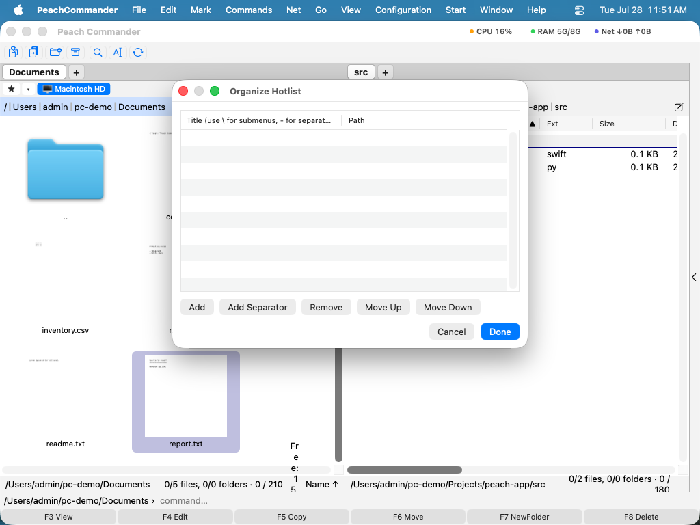

Obľúbené a zoznam rýchleho prístupu
Obľúbené (zoznam rýchleho prístupu k adresárom) sú rýchle skratky k priečinkom, ktoré neustále otvárate. Namiesto opakovaného preklikávania sa tou istou cestou ju raz uložíte a skočíte rovno späť k nej z krátkej ponuky — z ktoréhokoľvek panela, kedykoľvek. Môžete si nechať plochý zoznam alebo zoskupiť súvisiace priečinky do podponúk (napríklad všetky vaše projektové priečinky pod jedným nadpisom „Projekty").
Otvorenie ponuky obľúbených
- Urobte panel, do ktorého chcete navigovať, aktívnym (kliknite doň).
- Stlačte Ctrl+D, alebo vyberte Prejsť > Zoznam rýchleho prístupu k adresárom….
- Ponuka obľúbených sa objaví vedľa panela. Kliknite na priečinok na jeho otvorenie tam.
Vašich prvých deväť obľúbených je v ponuke očíslovaných, takže ich môžete vybrať stlačením 1 až 9, hneď ako je ponuka otvorená.
Pridanie aktuálneho priečinka
- Otvorte priečinok, ktorý si chcete zapamätať, v aktívnom paneli.
- Stlačte Ctrl+D na otvorenie ponuky obľúbených.
- Vyberte Pridať aktuálny adresár. Priečinok sa pridá na koniec zoznamu a je okamžite dostupný.
Usporiadanie obľúbených
- Otvorte ponuku obľúbených a vyberte Usporiadať zoznam rýchleho prístupu….
- V okne, ktoré sa otvorí, upravte Názov a Cestu každej obľúbenej priamo v tabuľke. Dvakrát kliknite na bunku na jej zmenu.
- Presúvajte riadky na zmenu ich poradia — poradie tu je poradie, v akom sa objavujú v ponuke.
- Použite tlačidlá na pridanie novej obľúbenej alebo oddeľovacej čiary.
- Na zoskupenie obľúbených do podponuky vložte do názvu spätnú lomku: obľúbená s názvom
Projekty\Webstránkasa objaví pod podponukou Projekty ako Webstránka. Takto môžete vnoriť viac úrovní. - Zatvorte okno na uloženie. Vaše obľúbené sa pamätajú medzi spusteniami.

(Obrázok: okno Usporiadať zoznam rýchleho prístupu — upravte názvy a cesty, zmeňte poradie riadkov a použite spätné lomky v názve na zostavenie podponúk.)Odznak s hviezdou
Nad zoznamom súborov každého panela je malý odznak ★. Kliknite naň na otvorenie ponuky bežných umiestnení (Domov, Plocha, Stiahnuté atď.) nasledovaných vašimi obľúbenými. Je to rýchly spôsob, ako sa dostať k obľúbenej bez toho, aby ste najprv prepli, ktorý panel je aktívny — priečinok sa otvorí v tom paneli. Tá istá ponuka má položku Zoznam rýchleho prístupu k adresárom…, ktorá otvorí organizátor.
Skratky
| Akcia | Skratka |
|---|---|
| Otvoriť ponuku obľúbených | Ctrl+D |
| Pridať aktuálny priečinok | Ctrl+D, potom Pridať aktuálny adresár |
| Vybrať jednu z prvých deviatich obľúbených | 1–9 (kým je ponuka otvorená) |
Poznámky
- Názov z jedinej pomlčky (
-) vytvorí v ponuke oddeľovaciu čiaru, praktickú na rozdelenie skupín. - Obľúbené sú zdieľané oboma panelmi — ten istý zoznam sa objaví, kdekoľvek otvoríte ponuku.
- Ponuka zobrazuje číselné skratky (1–9) iba pre prvých deväť obľúbených; ostatné sú stále tam a možno na ne kliknúť, len bez čísla.